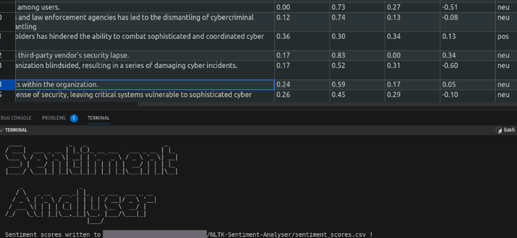
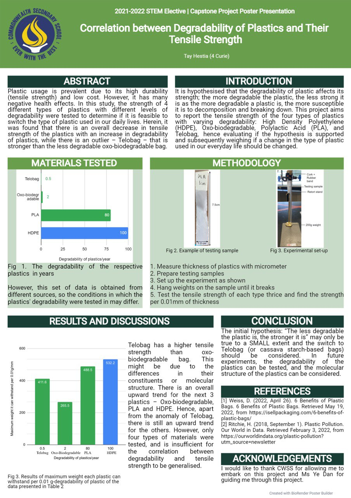

Kairos' Portfolio
Home
Resume
Events
Projects
Contact
Projects
ICT Projects
CyberBits - Cybersecurity Blog
A Cybersecurity blog I made that aims to provide valuable insights and resources for individuals to learn more about cybersecurity. There are two main types of posts: [Cyber Bits] with bite-sized and easy-to-understand content, and [Cyber Chunks] with more technical and in-depth content. Additionally, I try to document my own cybersecurity, such as my progress in it!
Programming Projects
GitHub Profile
Network Scanner Code (Output)
NLTK Sentiment Analyser

Previous
Next
Apart from my cybersecurity pursuits, I do enjoy crafting innovative programming solutions. I upload all my projects onto GitHub, some of them including a network scanner and an NLP sentiment analyser tool.
Science Research Projects
Science Centre Mentorship Programme
Abstract
Experimental Set-Up Snippet
Presentation
Previous
Next
During the one-year Science Mentorship Program (SMP) from 2021-2022, I had the opportunity to work on a team research project led by Dr. Kee Jun Wei from Science Centre (CRADLE). Our research focused on studying the kinetics of reactions between acids and metals, utilising software tools like Arduino, LibreCAD and Excel. It was an enriching experience for me as I was able to learn and apply various scientific concepts and research skills such as experimental design, data analysis and scientific report writing. Additionally, working with a team helped me develop my interpersonal skills and the ability to collaborate effectively with others towards a common goal. Overall, SMP has provided me with a solid foundation in scientific research and I look forward to applying these skills in my future academic pursuits.<
STEM Elective Capstone Project
Abstract
CWSS Open House
CWSS Open House
Poster

Previous
Next
As part of my school's STEM Elective Capstone Project, I conducted an individual research project (under mentorship of a teacher mentor, Ms Ye Dan) on the correlation between the tensile strength of plastics and its degradability. To collect and analyse the data,I utilised Excel to identify patterns and trends in the results.Ultimately, I was able to derive some insightful findings from the study. I had the opportunity to present my research orally and through a poster presentation to school leaders, the student body, and the general public during the CWSS open house.
Let's build something together
Contact me